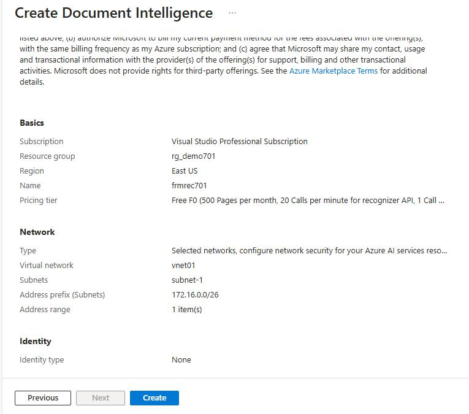
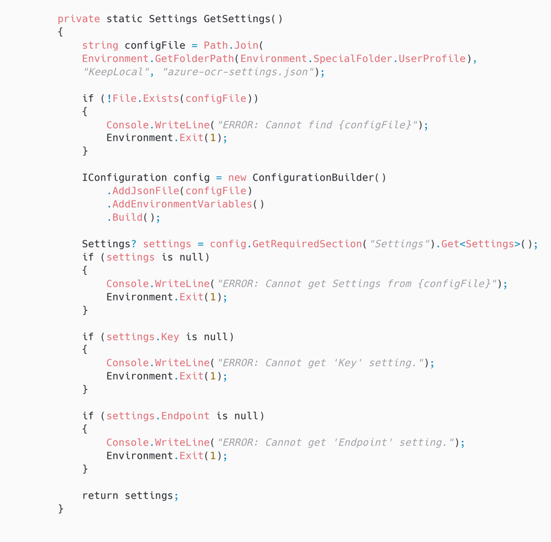
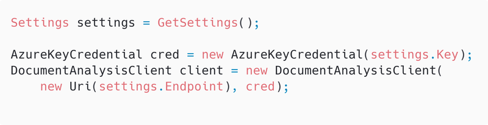

Meetup: meetup.com/Central-Ohio-NET-Developers-Group-CONDG
YouTube: youtube.com/@CONDG
Prompt: Create a cartoon image representing the term "lightning talk."
Prompt: Replace "lightning talk" with "blitz babble."
Your stuff is floating


Moldy books are not appealing
"I know that book is around here somewhere..."
Took pictures, for reference, in case I want to know if a book I remember having was lost in the not-so-Great Cellar Flood of 2019.
Rather than having to look through all the pictures, a list of the books would be more convenient.
Why spend a few hours doing a thing by hand when you can spend days automating it?
Optical Character Recognition
GitHub: tesseract
Per Wikipedia:
Tesseract is an optical character recognition engine for various operating systems. It is free software, released under the Apache License. Originally developed by Hewlett-Packard as proprietary software in the 1980s, it was released as open source in 2005 and development was sponsored by Google in 2006.
In 2006, Tesseract was considered one of the most accurate open-source OCR engines available.
-eng)sudo apt install tesseract-ocr-eng
When the pictures were taken, using them for OCR was not considered.
Many of the images have poor focus, and the books are moldy and wrinkled.
Some initial processing on the images was done to try to help the OCR process.
The Pillow package, a fork of the Python Imaging Library, was used for image processing.
Used a Python script to create two versions of the original image, both sharpened and scaled, and one converted to grayscale. The script read the list of images from a .csv file and applied the following to each row (some interim steps skipped):

Ss Foreword by
Hitchhiker's Guide
to Visual Studio and
SOL Server
Seventh Edition
=
5
ati
oe ie
bit SIR ail
Matt Eland has websites. Here are a few of them:
On 2022-08-24, Matt gave a talk called Automating my Dog with Azure Cognitive Services

Inspired by Matt's talk back in August, I looked into Azure Cognative Services.
Created a C# Console Application to process the book images.
Documentation Links
Note: Microsoft has renamed Form Recognizer to Document Intelligence.


Console application does the following:
AzureKeyCredential and DocumentAnalysisClient objects using the settings.AnalyzeDocumentAsync method to process the image data.AnalyzeResult to retrieve the resulting pages and lines.Source code is on GitHub: wmelvin/try-azure-ocr
AzureOCRConsoleApp.csproj
azure-ocr-settings.json

Settings.cs

Create an AzureKeyCredential and DocumentAnalysisClient using the key and endpoint.


Foreword by Bob Muglia
Windows Server System
Hitchhiker's Guide
to Visual Studio and
SQL Server
Seventh Edition
Best Practice Architectures and Exames
AUTHORITATIVE GUIDES FOR MICROSOFT WINDOWS AND SERVER PROFESIONALS
William R. Vaughn
with Peter Blackburn
Ss Foreword by
Hitchhiker's Guide
to Visual Studio and
SOL Server
Seventh Edition
=
5
ati
oe ie
bit SIR ail
I didn't make it as far in this exploration as I had hoped prior to this talk.
What I have done so far uses tools that recognize text in the images.
There are now tools, leveraging LLMs, that can recognize the books in the images.
I expect those tools can provide much better recognition and results than anything I have tried so far.
Detecting books in video
YouTube: Using AI for Journalism
Blog Post: The killer app of Gemini Pro 1.5 is video
Wikipedia: Anders Hejlsberg
Interview on YouTube: From Turbo Pascal to Delphi to C# to TypeScript...
Hanselminutes: Introducing TypeChat with Anders Hejlsberg
Blog: Introducing TypeChat
GitHub: TypeChat
To be continued...
I used the Firebird database server on the job for an internal application. It just worked - as they say.

This book was very helpful when I was making a living programming in Turbo Pascal.
I never did much C programming, but the book was a classic.

Early in my programming career, I wrote some microcontroller assembly language. Besides being a necessary reference, these manufacturer's handbooks were somehow fascinating.
The Peter Norton classic. Very useful back when knowing interrupt request (IRQ) numbers mattered.
The Charles Petzold classic.
I used REBOL on the job for one thing, once, a long time ago.